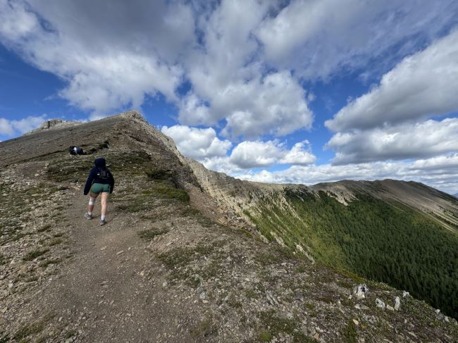

Tent Ridge Horseshoe Trail
The Tent Ridge Horseshoe Trail is one of those hikes that stays with you long after you've finished. If you're up for a challenge, this 12-kilometer loop in Kananaskis Country is an absolute gem. Right from the start, it’s clear that this isn’t a walk in the park—the trail quickly gains elevation, winding through alpine meadows and rocky terrain that requires a bit of scrambling. But the payoff? Absolutely worth it. As you make your way up, the views open up, and soon you’re surrounded by jagged mountain peaks, the hike rewards you with stunning panoramic sights of nearby peaks like Mounts McConnell, Allen, and the Three Point Mountain. Be prepared however for some steep and rocky sections, with a bit of scrambling needed, especially as you near the summit, so it's best suited for those with hiking experience. I highly recomment this Hike as you literally hike about three peaks, each as breathtaking as the others. It was also fun because we met loads of people that made the hard sections worthwhile. Also make sure to bring food as this is a long and harsh trail:)